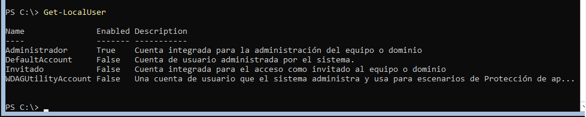
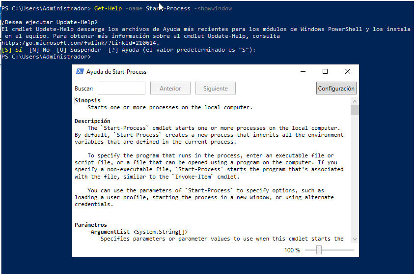

PR0401: Introducción a PowerShell
1. Obtén ejemplos de utilización del comando Get-LocalUser

2. Obtén un listado de todos los comandos relacionados con la gestión de usuarios locales

3. Muestra en el navegador la ayuda del comando Get-LocalUser

4. Explicación del comando Set-Content
El comando Set-Content se utiliza para modificar el contenido de un archivo. Es similar al comando nano en Linux, ya que permite sobrescribir el contenido de un archivo con una nueva información.
5. Tres formas de ver o buscar un comando usado anteriormente
- Usando
Ctrl + R para buscar hacia atrás y Ctrl + S para buscar hacia adelante.
- Utilizando el comando
Get-History (o simplemente h).
- Ejecutando
Invoke-History (o r) para volver a ejecutar un comando del historial.
6. Parámetro ComputerName en Get-Process
El comando Get-Process tiene un parámetro llamado ComputerName, que permite obtener los procesos en equipos remotos.
7. Muestra la ayuda del comando Start-VM en una ventana emergente

8. Muestra la ayuda del comando Get-Help en el navegador

9. Muestra las últimas 20 entradas del historial

10. Elimina las entradas 10, 12 y 14 del historial